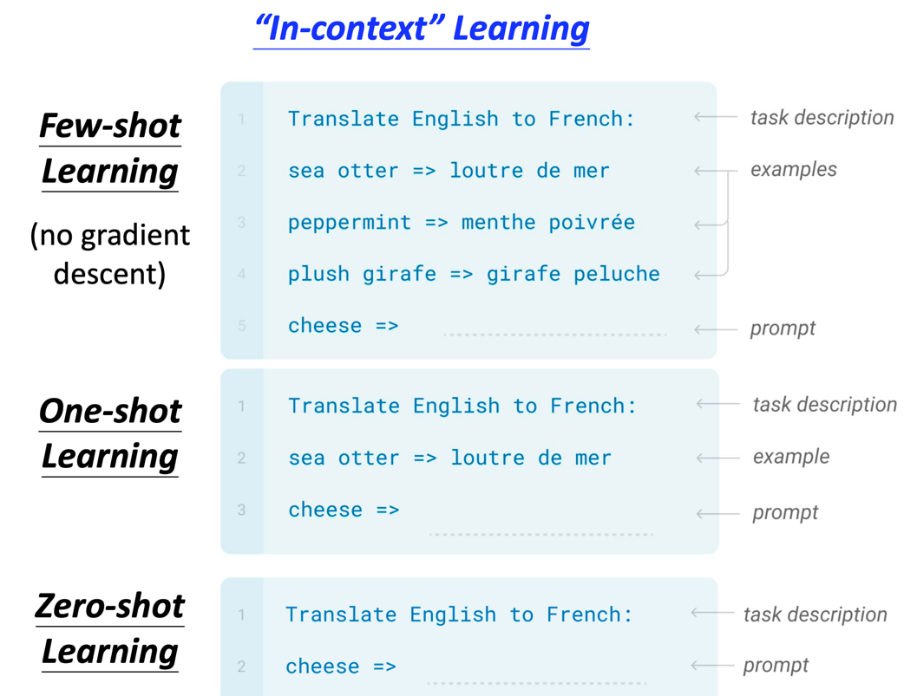

chapter 4.8 深度学习8 GPT
总结
GPT的全称是generative pre-training，通用预训练模型，
elmo有94m个参数，bert有340m个参数，GPT有1542m个参数
GPT是transformer的decoder network
GPT的学习任务是，给定一些word，预测接下来的word是什么？
GPT神奇的地方：没有训练数据的情况下，可以做阅读理解（表现很好），生成摘要（一般般），翻译（一般般）。做到了zero-shot learning
GPT3也是一个语言模型，有史以来最大的语言模型，有1750yi个参数，训练一个商用的GPT3模型，要花1200w美元

bert模型是需要对特定任务搜集特定数据持续学习的。GPT野心更大，想做zero-shot，fine tuing都不要，见下图：

举个例子，

GPT要解决三个任务：Few-shot Learning/One-shot Learning/Zero-shot Learning。
注意，GPT的Few-shot Learning跟一般的Few-shot Learning不一样，GPT不会对模型去fining tuning ,bert是需要fine tuning的 
GPT使用的是in context learning，跟meta learning有一点点不一样
GPT不擅长做NLU的问题，即逻辑判断的问题。